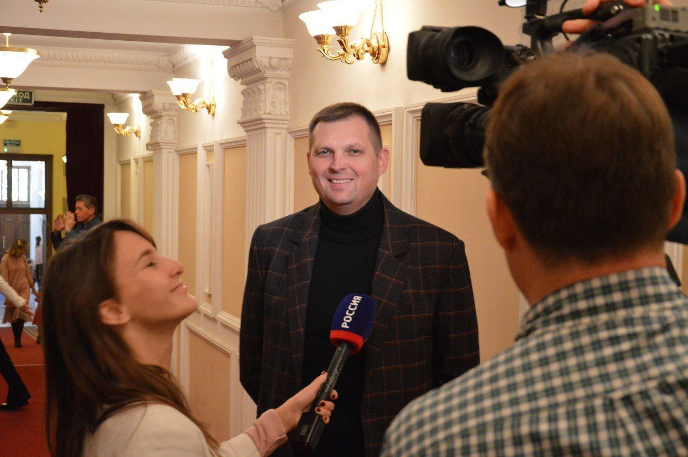

НОВОСТИ
-
26 декабря зажигательное Новогоднее представление у театральной ёлки и новый спектакль-карнавал "Бременские музыканты" по приглашению городской администрации посетили ученики нескольких мариупольских школ. Перед показом, в сопровождении Деда Мороза и Снегурочки, на сцену вышли глава администрации Мариуполя Константин Иващенко и художественный руководитель театра, заслуженный артист РФ Александр Ростов. Поздравив ребят с наступающими праздниками тёплыми пожеланиями и добрыми напутствиями, они пригласили присутствующих в волшебный мир красивой и светлой сказки.
-

Театральная труппа Мариупольского драматического театра продолжает #БольшиеГастроли по Крыму, следующая остановка - Ялта. 13 и 14 ноября с огромным успехом на сцене Ялтинского театра им. А. П. Чехова дважды были показаны детский спектакль "Золотой цыплёнок" и неизменные "Водевили". И снова не было свободных мест в зале, и теперь уже ялтинский зритель бурными аплодисментами горячо поблагодарил мариупольцев за их героизм, стойкость, артистичность, душевность и великолепную актерскую игру. Дети подарили артистам сувениры, цветы и конфеты. Генеральный директор Мариупольского драматического театра Игорь Солонин дал интервью журналистам телеканала "Россия". 14 ноября с мариупольской гастролирующей труппой встретилась мэр Ялты Янина Павленко, горячо поблагодарила артистов и организовала мариупольской театральной труппе экскурсию на винный завод Массандра. Следующий крымский город, который посетит наша театральная труппа - Севастополь! Пожелаем артистам новых театральных побед!